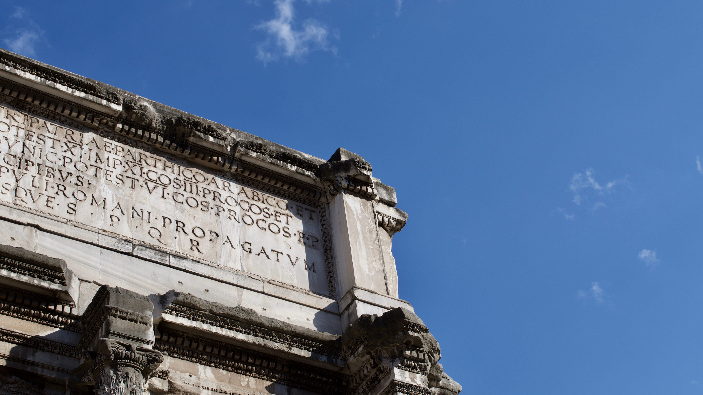
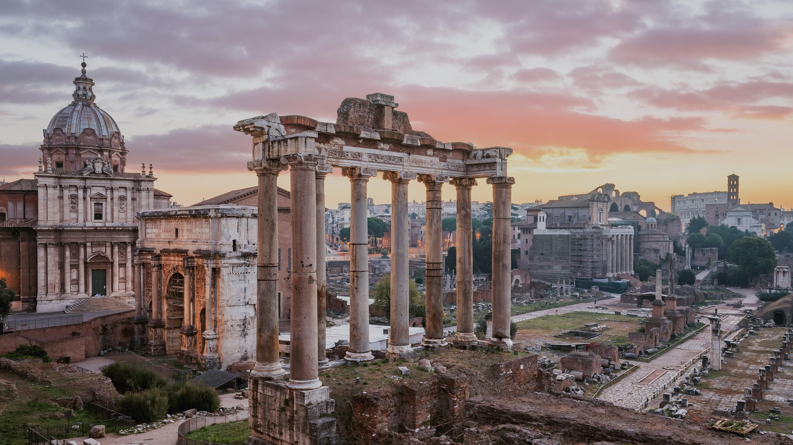
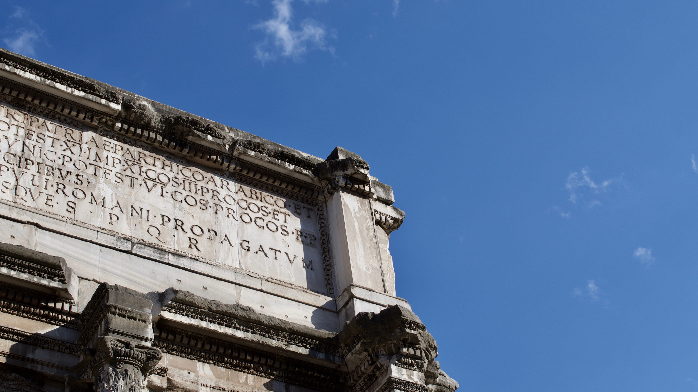
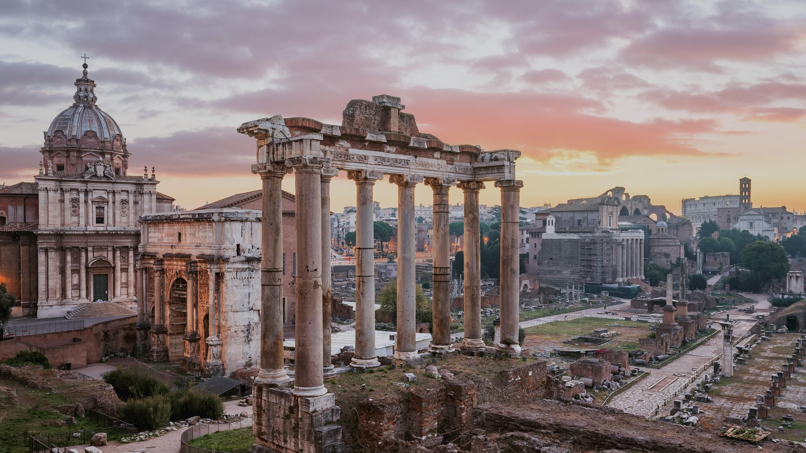
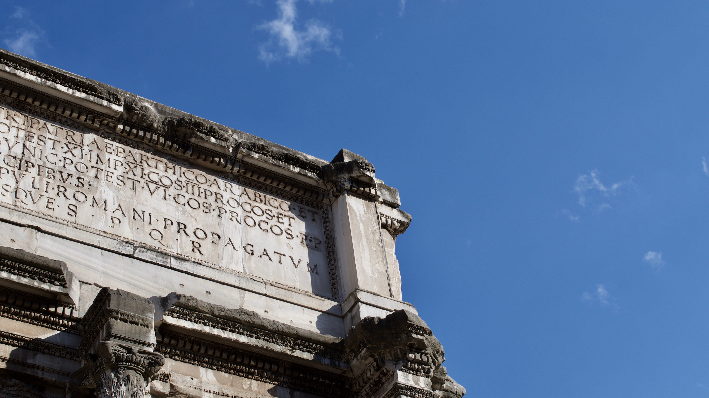
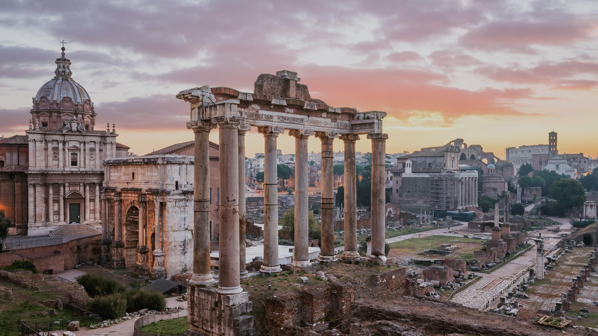
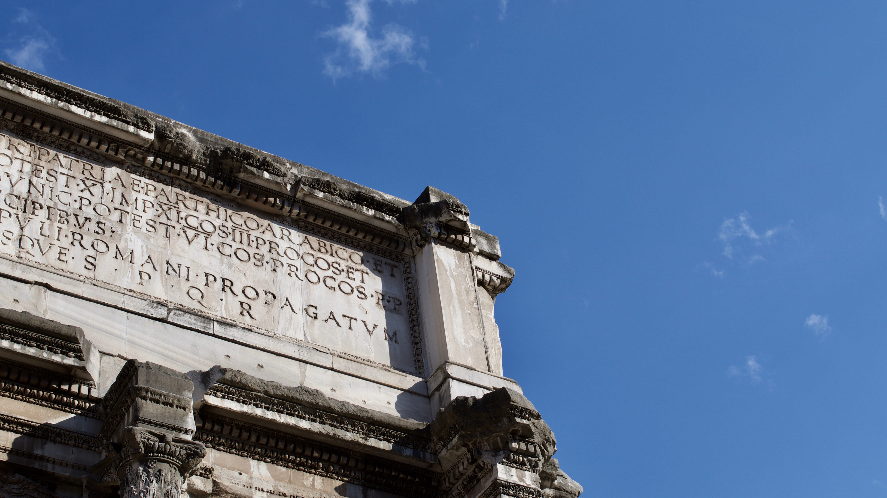
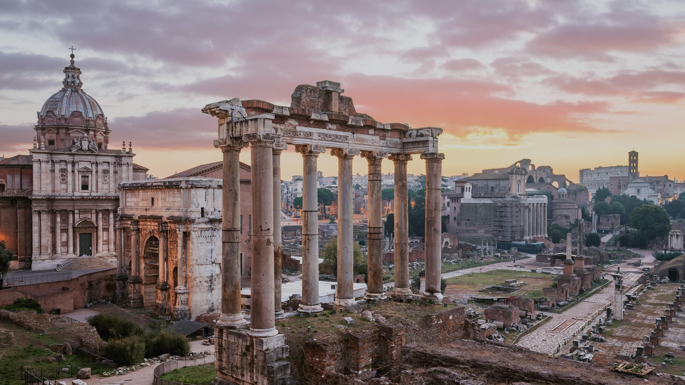

Tauchen Sie ein in die faszinierende Welt dieser historischen Stätte, die einst das pulsierende Zentrum des politischen, sozialen und wirtschaftlichen Lebens war.
Das Forum Romanum verkörpert die Essenz einer längst vergangenen Epoche, in der das Schicksal großer Zivilisationen auf dem Spiel stand.
Als Ort politischer Intrigen, triumphaler Siege und bedeutender historischer Wendepunkte vermittelt das Forum Romanum den Besuchern einen einzigartigen Einblick in das Leben der Antike.
Hier, in diesem pulsierenden Zentrum, nahmen die Schicksalsfäden des Römischen Reiches ihren Lauf.


Neben der Basilica Aemilia war in der Curia der Senat von Rom untergebracht. Der Hauptbau ist vollständig erhalten, was seiner Nutzung als Kirche während des Mittelalters zu verdanken ist. Es handelt sich allerdings nicht um das ursprüngliche Gebäude, sondern um einen Wiederaufbau Diokletians aus dem Jahre 303 n. Chr.: Die Curia war 283 n. Chr. Bei einem Brand, der das ganze Viertel zwischen Caesar-Forum und Basilica Iulia zerstörte, niedergebrannt. Der Bau war von Caius Iulius Caesar errichtet worden (daher der Name Curia Iulia), als Ersatz für die 52 v. Chr. abgebrannte Curia Hostilia, und markierte einen wichtigen Einschnitt bei der Umgestaltung des nördlichen Endes des Forums, dem das republikanische Comitium zum Opfer fallen sollte. Geweiht wurde die neue Curia allerdings erst unter Augustus, Caesars Adoptivsohn und Erben, am 28. August 29 v. Chr., also immerhin 15 Jahre nach Caesars Tod.
Der Triumphbogen des Septimius Severus wurde zu Ehren des Kaisers und seiner Söhne Geta und Caracalla (ersterer wurde später von letzterem ermordet) im Jahr 203 n. Chr. errichtet, um an die Erfolge des Imperators im Osten gegen die Parther zu erinnern. Er ist vollständig mit Marmor verkleidet und mit einer Breite von 23,27 Metern, einer Höhe von 20,88 Metern und einer Tiefe von 11,20 Metern eines der größten derartigen Bauwerke der Antike. Zu den beiden seitlichen Durchgängen gelangte man über Stufen, durch den mittleren führte die Via Sacra, die hier ihren Anstieg zum Kapitol begann (Clivus Capitolinus). An beiden Seiten des oberen Stockwerks ist eine Inschrift: angebracht.
"Dem Imperator Caesar Septimius Severus, dem Sohn des Marcus, dem Pius, Pertinax, Augustus, Vater des Vaterlandes, dem Besieger der Parther, der Araber und des parthischen Adiabene, dem Pontifex Maximus, der zum elften Mal Träger der Macht eines Tribuns, zum elften Mal zum Imperator ernannt, zum dritten Mal Konsul und Prokonsul ist; und dem Imperator Caesar Marcus Aurelianus Antoninus, Sohn des Lucius, dem Augustus, Pius, Felix, der zum sechsten Mal die Macht eines Tribunen hat, dem Konsul, Prokonsul, Vater des Vaterlandes; den besten und stärksten principes, für die Rettung des Staates und die Erweiterung des Herrschaftsbereichs des römischen Volkes und für ihre außerordentlichen Leistungen in der Heimat und in der Fremde. Der Senat und das Volk von Rom."
Neben dem Saturntempel befindet sich der kleinere Tempel des Vespasian und des Titus, der dem flavischen Kaiser Vespasian und seinem Sohn geweiht war. Er wurde unter Domitian fertig gestellt, der Nachfolger seines Bruders Titus war. Der 33 Meter lange und 22 Meter breite Tempel schließt so dicht an das Tabularium an, dass ein Eingang des Archives geschlossen werden musste. Von der Vorhalle sind noch drei korinthische, 15,20 Meter hohe Säulen erhalten, die erhaltenen Kapitelle und Friese zeigen noch den flavischen Stil.
Aus einer Inschrift, von der heute nur noch das Bruchstück restituert erhalten ist, die uns aber von einem Pilger aus dem 8. Jahrhundert überliefert ist, wissen wir, wem der Tempel geweiht war: dem vergöttlichten Vespasian vom Senat und dem Volk von Rom, restauriert von Septimius Severus und Caracalla.
Beherrscht wird der zum Forum hin gelegene Abhang des Kapitols von drei Tempeln, dessen größter der Tempel des Saturn ist. Seine Überreste dominieren noch heute die südwestliche Ecke des Forums: Ein gewaltiges Podium mit den noch aufrecht stehenden Säulen des Pronaos. Der Tempel hat eine lange Geschichte: Schon vor Errichtung eines Tempelgebäudes gab es an dieser Stelle einen Altar, und schon in der Königszeit wurde mit dem Bau des ersten Tempels begonnen. Die Weihung fand 498 v. Chr., also bereits in republikanischer Zeit, statt. Damit kann der Saturntempel nach dem Tempel des Iuppiter Capitolinus als zweitältester Tempel Roms gelten.
Was von dem Tempel heute noch zu sehen ist, geht wahrscheinlich auf eine Restaurierung nach einem Feuer 283 n. Chr. zurück. Bereits 42 v. Chr. hatte Munatius Plancus ihn vollständig wiederaufbauen lassen. Die Inschrift auf dem Architrav erinnert an diesen Wiederaufbau nach der Zerstörung durch den Brand durch Senat und Volk von Rom:
SENATUS POPULUSQUE ROMANUS INCENDIO CONSUMPTUM RESTITUIT